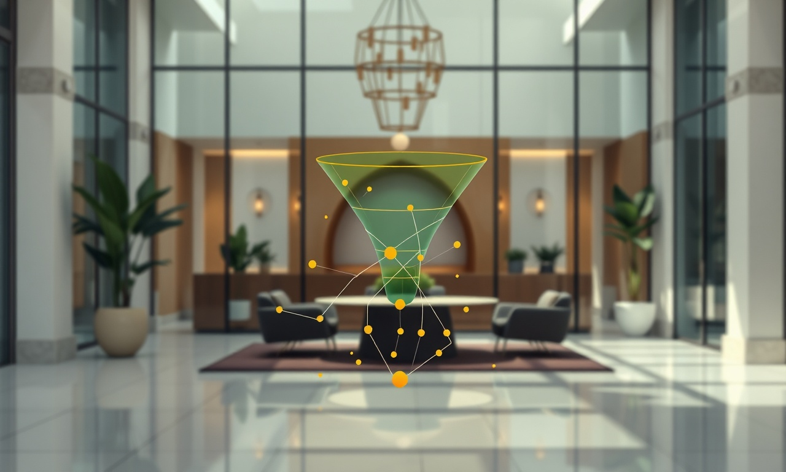

Le B2B marocain a changé : l'entonnoir de vente n'est plus une option
En résumé : Entonnoir de Vente B2B au Maroc : la Méthode DatRey pour des Revenus Prévisibles en 2026 est une démarche stratégique clé dans le domaine du Formations & Master Classes. Elle permet aux entreprises au Maroc d’optimiser durablement leurs performances digitales, d’augmenter leur visibilité et de maximiser le retour sur investissement (ROI) de leurs campagnes.
Dirigeant, vous le sentez. En 2026 et pour les années à venir, vendre une formation ou une master class au Maroc ne se résume plus à envoyer des commerciaux sur le terrain ou à sponsoriser un post LinkedIn. Le marché de Casablanca, Rabat, Tanger et Marrakech est saturé de propositions. Vos prospects, ces DG et Directeurs Marketing, sont noyés sous les sollicitations. La seule issue pour se démarquer et générer un chiffre d'affaires stable, c'est la mise en place d'un entonnoir de vente B2B rigoureusement structuré.
Cet article est votre plan d'action. Nous allons disséquer les mécanismes précis qui transforment un budget marketing en un flux de revenus prévisible. Oubliez les théories vagues. Ici, on parle de budgets en MAD, de coûts d'acquisition, de taux de transformation et de ROI mesurable, avec des exemples concrets tirés du terrain marocain.
Définition opérationnelle : l'entonnoir de vente B2B au Maroc
Un entonnoir de vente B2B est un système structuré de marketing et de vente qui guide un prospect depuis sa première prise de contact avec votre marque jusqu'à la signature d'un contrat. Pour un organisme de formation au Maroc, il s'agit d'un processus automatisé et mesurable qui attire, qualifie et convertit des entreprises clientes via des contenus ciblés, des campagnes de génération de leads et un suivi commercial systématique, optimisé pour un coût d'acquisition (CAC) maîtrisé et un retour sur investissement (ROI) maximal.
Pourquoi votre approche actuelle de vente de formations échoue (et comment la corriger)
Prenons un exemple. Un centre de formation à Casablanca dépense 15 000 MAD par mois en publicité sur les réseaux sociaux. Il obtient des likes, des commentaires, mais très peu de demandes de devis. Pourquoi? Parce qu'il n'y a pas d'entonnoir. Il y a une vitrine, mais pas de parcours. Le prospect intéressé ne sait pas quoi faire, il n'y a pas de prochaine étape logique, pas de contenu pour le convaincre, pas de mécanisme pour le capturer.
Un entonnoir de vente B2B efficace pour une master class à Marrakech ou une formation certifiante à Tanger se construit en trois étapes distinctes :
- Attirer (Haut de l'entonnoir) : Générer un trafic qualifié vers votre site web ou une page de capture via du SEO/GEO, de la publicité ciblée sur LinkedIn ou Google Ads. L'objectif n'est pas le trafic, mais l'attention d'une personne ayant un problème que votre formation résout.
- Convertir (Milieu de l'entonnoir) : Transformer ce visiteur en lead en échange d'une ressource de valeur. Un guide PDF, une étude de cas, un simulateur de ROI, ou l'accès à une master class gratuite en ligne. C'est ici que vous capturez l'email et le numéro de téléphone.
- Clôturer (Bas de l'entonnoir) : Nourrir ce lead avec des emails automatisés, des témoignages vidéo, des arguments chiffrés, puis le transmettre à votre équipe commerciale avec un contexte complet. Le commercial ne démarre pas à froid ; il a une conversation avec un prospect déjà convaincu à 60%.
Analyse financière : le coût de l'ignorance vs le ROI d'un entonnoir performant

Parlons chiffres. Imaginons un organisme de formation à Rabat qui vend des programmes de leadership à 25 000 MAD HT par participant. Sans entonnoir, ils dépendent du réseau personnel du dirigeant. Leur cycle de vente est de 4 à 6 mois, et leur taux de transformation des devis est d'environ 10%.
Avec un entonnoir de vente B2B structuré, voici ce qui change. Prenons un budget de 30 000 MAD par mois pour l'acquisition (Google Ads, LinkedIn Ads, production de contenu et outil d'automatisation). Un entonnoir bien conçu peut générer 200 leads qualifiés par mois. Après nurturing, 20% deviennent des opportunités commerciales (40 opportunités). Avec un taux de clôture de 25%, cela représente 10 ventes par mois. Soit un chiffre d'affaires de 250 000 MAD par mois.
Le calcul du ROI est simple : Pour 30 000 MAD investis, vous générez 250 000 MAD de revenus. Un retour sur investissement de 733%. Votre coût d'acquisition client (CAC) passe de 15 000 MAD (si vous êtes chanceux) à 3 000 MAD. Le problème n'est pas le marché. C'est votre système.
Les 3 piliers d'un entonnoir de vente B2B rentable pour les formations au Maroc
1. L'offre irrésistible : votre sésame pour capter l'attention des DG
Un DG à Casablanca ne télécharge pas un ebook intitulé 'Les bases du management'. Il veut une réponse à un problème brûlant. Votre lead magnet doit être un concentré de valeur actionnable. Exemples : 'Le modèle de calcul de ROI pour votre département RH en 2026', 'La checklist de déploiement d'une stratégie de transformation digitale', ou 'L'étude de cas d'une PME de Tanger qui a réduit ses coûts de 20% grâce à notre méthode'. Cette ressource doit être si spécifique que votre prospect se dit : 'S'ils comprennent mon problème à ce point, leur formation doit être excellente'.

2. Le nurturing automatisé : la machine à conviction
Un lead n'achète jamais immédiatement. Il a besoin d'être rassuré, éduqué et convaincu. L'emailing automatisé est votre meilleur commercial. Pendant 14 jours, votre prospect reçoit une séquence d'emails : le premier jour, il reçoit le lead magnet promis ; le troisième jour, un témoignage vidéo d'un client de Marrakech ; le septième jour, une étude de cas avec des chiffres précis ; le dixième jour, la présentation de votre programme de formation ; le quatorzième jour, une offre spéciale limitée dans le temps pour l'inciter à passer à l'action.
Ce système travaille pour vous 24h/24, même quand votre équipe dort. Il qualifie les leads, identifie les plus chauds (ceux qui ouvrent vos emails et cliquent sur vos liens) et les transmet aux commerciaux avec un score de priorité.
3. L'alignement marketing-vente : la fin des silos
Le plus grand tueur de ROI au Maroc est la rupture entre le marketing et la vente. Le marketing génère des leads, mais les commerciaux les ignorent car ils les jugent 'pas prêts'. La solution est un processus de transmission défini : un lead ne devient une opportunité que s'il a eu une interaction significative (téléchargement, participation à un webinaire, demande de rappel). Le commercial doit avoir accès à tout l'historique du lead : ce qu'il a téléchargé, les pages visitées, les emails ouverts. Fort de ces données, son premier appel est personnalisé et pertinent. Il ne vend pas, il accompagne.
Cas pratique : comment DatRey a transformé l'acquisition d'un organisme de formation à Casablanca
Prenons le cas réel (anonymisé) d'un client de DatRey, un institut de formation professionnelle à Casablanca. Ils avaient un excellent catalogue, mais dépendaient de bouche-à-oreille. Leur croissance était aléatoire. Nous avons mis en place notre méthodologie en 3 phases :
Phase 1 (Mois 1) : Audit et mise en place de la base. Nous avons optimisé leur site web pour le SEO local (mots-clés comme 'formation management Casablanca'), créé une page de capture dédiée avec un lead magnet sur 'les erreurs de recrutement qui coûtent des millions', et installé un outil d'automatisation. Budget initial : 25 000 MAD.
Phase 2 (Mois 2-3) : Lancement des campagnes Google Ads et LinkedIn Ads. Nous avons ciblé les Directeurs des Ressources Humaines et DG à Casablanca, Rabat et Tanger. Le coût par lead a été négocié à un objectif de 300 MAD. Nous avons lancé la séquence d'emails de nurturing. À la fin du troisième mois, 150 leads qualifiés avaient été générés, pour un coût total de 45 000 MAD.
Phase 3 (Mois 4) : Transmission à l'équipe commerciale. Armés de l'historique complet des leads, les commerciaux ont obtenu un taux de transformation de 20%. Résultat : 30 nouvelles inscriptions à la formation, soit un chiffre d'affaires de 750 000 MAD. Le retour sur investissement est massif. La croissance n'est plus un accident, c'est un processus.
Votre plan d'action en 5 étapes pour un entonnoir rentable dès cette année
- Auditez votre situation actuelle : Identifiez où vous perdez des prospects. Est-ce à l'étape de l'attraction, de la conversion ou de la clôture?
- Définissez votre offre de formation comme un produit : Quel problème précis résout-elle pour un DG? Quels sont les résultats chiffrés attendus?
- Créez votre lead magnet : Développez une ressource ultra-spécifique qui démontre votre expertise tout en capturant des leads qualifiés.
- Automatisez votre nurturing : Utilisez un outil d'emailing pour mettre en place des séquences pré-écrites qui éduquent et convainquent vos prospects.
- Mesurez, optimisez, recommencez : Suivez chaque KPI (taux de conversion, CAC, ROI). Arrêtez ce qui ne fonctionne pas et doublez ce qui fonctionne.
Conclusion : la croissance prévisible est un choix stratégique
Le marché de la formation au Maroc est en pleine expansion. Les entreprises de Casablanca, Rabat, Tanger et Marrakech ont un besoin urgent de monter en compétences. Mais elles ne choisiront pas votre organisme par hasard. Elles choisiront celui qui a su construire un parcours d'achat fluide, qui les a éduquées, rassurées et convaincues. C'est exactement ce que fait un entonnoir de vente B2B performant.
Ne laissez pas votre croissance au hasard. Ne dépendez plus uniquement de votre réseau. Prenez le contrôle de votre acquisition client. Chez DatRey, nous ne nous contentons pas de donner des conseils. Nous construisons, nous testons et nous optimisons des machines à générer des leads rentables pour nos clients. Nos experts connaissent les spécificités du marché marocain et les stratégies globales qui fonctionnent.
Votre prochaine étape est simple. Arrêtez de lire et passez à l'action. Offrez-vous l'avantage concurrentiel que vous méritez. Demandez votre Audit Digital Gratuit dès aujourd'hui. En 48 heures, nos stratèges analyseront votre présence en ligne, identifieront les fuites dans votre entonnoir actuel et vous remettront un plan d'action personnalisé pour transformer votre budget en revenus prévisibles. Le marché est prêt. Êtes-vous prêt à le conquérir?